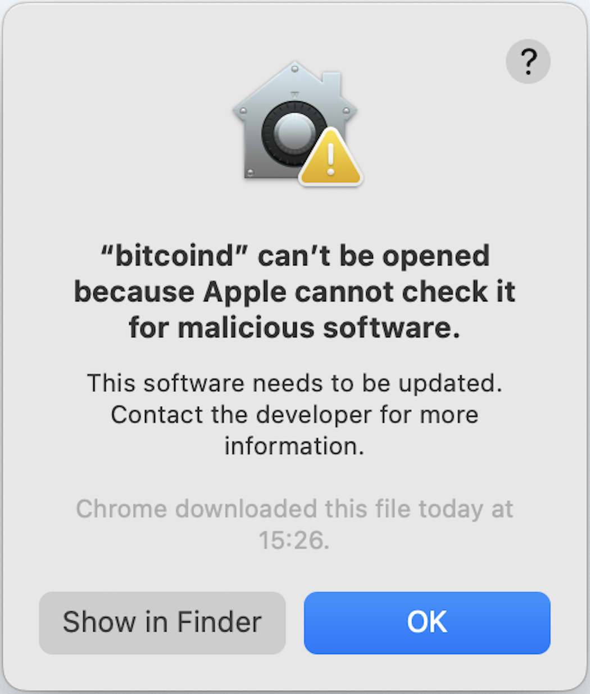
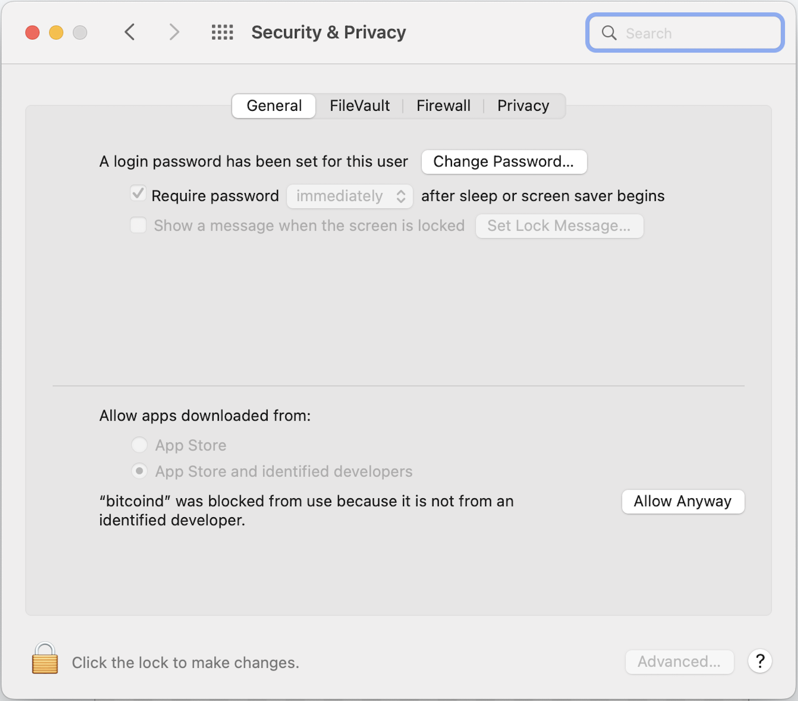

ION
The Identity Overlay Network (ION) is an open source DID method implementation developed by the Decentralized Identity Foundation.
In other words, ION is a software tool that can be used to perform DID operations, such as creating and publishing new DIDs and DID documents, and resolving existing ones. It does this by reading and writing data to the Bitcoin blockchain and to the IPFS distributed file system. As such, every ION instance is a node on these two peer-to-peer networks.
Trustchain delegates the execution of DID operations to an ION node. Therefore to use Trustchain you must first install and run ION, either on the same machine or a connected one.
ION resource requirements
An ION installation includes a full node on the Bitcoin network, which must download and store the entire Bitcoin blockchain. This is a large amount of data that typically takes several hours, or even days, to download.
The recommended system requirements for an ION installation are:
- 6GB of RAM
- 1.5TB of storage (or 100GB for Testnet4).
Note, however, that Trustchain makes no assumptions about the trustworthiness of the ION system and the Trustchain security model does not rely on the correct functioning of the ION software. Trustchain independently verifies all of the data it receives from ION, so a faulty or compromised ION node would not represent a security vulnerability in Trustchain (although it could cause a loss of service).
This page explains how to install and run ION.
Preliminaries
Before beginning the installation, a few decisions must be made that will determine exactly what steps should be taken.
Docker Container vs. Full Installation
The simplest way to run ION is using Docker, and it can be a useful way to experiment with the system before performing a full installation. However, this method provides a read-only ION node. This means that it provides access to existing DIDs, but cannot be used to create and publish new ones.
If you would like to be able to use Trustchain to create and publish your own DIDs, follow the full installation instructions below (and ignore the ION with Docker section).
If you want to run ION using Docker, you can skip most of this page and just follow the instructions in the ION with Docker section.
Bitcoin Mainnet vs. Testnet
The Bitcoin client wrapped inside an ION node can be configured either for Mainnet (the main Bitcoin network) or Testnet (an alternative blockchain designed for testing and software development).
Mainnet should be used for a production deployment of Trustchain because DID operations published on the Bitcoin blockchain have extremely strong immutability, persistence and discoverability properties. When testing Trustchain, however, it is sensible to configure the ION Bitcoin client for Testnet, since coins on the test network have no monetary value and therefore "test" DID operations can be executed at zero cost.
The current iteration of Bitcoin's test network is Testnet4, which since May 2024 has replaced the (now deprecated) Testnet3. It is possible to run ION on either of these networks, but Testnet4 is strongly recommended over Testnet3.
Testnet coins can be requested from a Testnet "faucet", such as this one for Testnet4 or this one for Testnet3.
In this guide, commands and configuration settings may depend on which network is in use. In those cases, choose the appropriate tab for your setup: Mainnet, Testnet4 or Testnet3 (Deprecated).
Local vs. Remote Installation
You can install ION on your local machine or a remote one, e.g. a virtual machine in the Cloud. If you are using a remote machine, connect to it using SSH and follow the instructions below.
Once installed, follow the port forwarding instructions in the SSH config section to produce a setup that is indistinguishable from running an ION node locally.
ION Installation Guide
These instructions are based on the official ION Install Guide but contain additional details, several minor corrections and a workaround to support recent versions of Bitcoin Core.
Both Linux and macOS are supported and tested. For Linux, our instructions assume a Debian-based distribution, such as Ubuntu. Some minor changes will be needed for other distributions. Instructions for installing on Windows are given in the official ION guide.
In all cases, administrator privileges are required.
Prerequisites
Create the SHELL_CONFIG environment variable
Before continuing, make sure you have created the SHELL_CONFIG environment variable by following the instructions on the Getting Started page.
Run the following commands to set up your environment.
Update the package lists on your machine and install essential build tools:
Install Git: Install Node.js: and the Node package manager:Install Xcode command line tools:
Install the Homebrew package manager: Install Node.js via the download page or with this command:Install IPFS
IPFS is the InterPlanetary File System, a peer-to-peer protocol and network used by ION for storing and sharing data.
Follow the official IPFS installation instructions for Linux.
Then initialise your IPFS node:
To check the installation was successful, open a new Terminal window and start the IPFS daemon: Then (back in the original Terminal window) run: which should output a welcome message.Install MongoDB
Instructions for installing MongoDB on Linux are available on the MongoDB website.
Install Bitcoin Core
Trustchain has been tested with Bitcoin Core v28.0 and therefore the instructions below assume that version. Other versions of Bitcoin Core are available and can be used, but will require some minor changes to the commands in the following steps.
Testnet4 requires Bitcoin Core v28.0 or above
If you are intending to run ION on Testnet4 you must install Bitcoin Core v28.0 or above, as this is the earliest version that supports the new test network.
Begin by downloading the Bitcoin Core release for your system:
- Download link for Linux with x86-64 processor.
- Download link for Linux with ARM processor.
Verify the download by comparing the published hash with the result of this command:
Unzip the archive:
and install Bitcoin Core: The installation includes an executable file namedbitcoind which we will run to start Bitcoin Core.
Begin by downloading the Bitcoin Core release for your system:
- Download link for Mac with x86-64 processor.
- Download link for Mac with Apple M-series processor.
Verify the download by comparing the published hash with the result of this command:
Unzip the archive:
and move the contents to the/Applications folder:
The download contains an executable file named bitcoind which we will run to start Bitcoin Core.
Sign the Bitcoin Core executable files
Newer macOS systems will refuse to run an executable file unless it is signed. Run the following command to check whether this is a requirement on your machine:
If you see the message "code object is not signed at all", you will need to create a self-signed certificate for the executable file. Do this by running: And do the same for the Bitcoin CLI executable:Configure Bitcoin Core
We shall need to specify a folder to store the Bitcoin blockchain data.
Bitcoin data storage requirements
The Bitcoin data folder will store the entire Bitcoin blockchain, which is >800GB for Mainnet and >15GB for Testnet4.
For convenience, we create an environment variable for the Bitcoin data folder.
Create the BITCOIN_DATA environment variable
Our convention is to use the folder ~/.bitcoin for Bitcoin Core data. If you want to use a different folder, just change the path in the following command:
Having defined the BITCOIN_DATA environment variable, use it to create the data folder itself:
Bitcoin configuration parameters will be stored in a file named bitcoin.conf inside the $BITCOIN_DATA folder.
The following command creates that file with the required parameters and user permissions:
printf "server=1\ndaemon=1\ntxindex=1\nblocksxor=0\ndatadir=$BITCOIN_DATA\ndeprecatedrpc=create_bdb\ndeprecatedrpc=warnings\n" > $BITCOIN_DATA/bitcoin.conf && chmod 640 $BITCOIN_DATA/bitcoin.conf
To confirm these changes were made correctly, check the first three lines in the bitcoin.conf file by running:
Bitcoin configuration parameters will be stored in a file named bitcoin.conf inside the $BITCOIN_DATA folder.
The following command creates that file with the required parameters and user permissions:
printf "testnet4=1\nserver=1\ndaemon=1\ntxindex=1\nblocksxor=0\ndatadir=$BITCOIN_DATA\ndeprecatedrpc=create_bdb\ndeprecatedrpc=warnings\n" > $BITCOIN_DATA/bitcoin.conf && chmod 640 $BITCOIN_DATA/bitcoin.conf
To confirm these changes were made correctly, check the first three lines in the bitcoin.conf file by running:
Bitcoin configuration parameters will be stored in a file named bitcoin.conf inside the $BITCOIN_DATA folder.
The following command creates that file with the required parameters and user permissions:
printf "testnet=1\nserver=1\ndaemon=1\ntxindex=1\nblocksxor=0\ndatadir=$BITCOIN_DATA\ndeprecatedrpc=create_bdb\ndeprecatedrpc=warnings\n" > $BITCOIN_DATA/bitcoin.conf && chmod 640 $BITCOIN_DATA/bitcoin.conf
To confirm these changes were made correctly, check the first three lines in the bitcoin.conf file by running:
Configuration in older versions of Bitcoin Core
If you are running an older version of Bitcoin Core, you may need to omit the deprecatedrpc parameters from your configuration file:
- the settings
blocksxor=0anddeprecatedrpc=warningswere introduced in Bitcoin Core v28.0, so they must be omitted if you are running an earlier version. - the setting
deprecatedrpc=create_bdbwas introduced in Bitcoin Core v26.0, so it must be omitted if you are running an earlier version.
Note: Do not use the ~ shorthand in the datadir parameter
The directory path in the datadir parameter must not contain the ~ character as a shorthand for the user's home directory.
The example given in the official ION install guide does use this shorthand, which causes an error, so beware of this issue if you are following that guide and/or editing the bitcoin.conf file manually.
Configure Bitcoin CLI
When your Bitcoin Core node is up and running, you will want to be able to communicate with it. Bitcoin Core provides a command line interface (CLI) for this purpose.
Run the following command to create an alias, making to easy to access the CLI:
Bitcoin RPC username and password
Before you can make use of the CLI you will need to add a username and password to the Bitcoin configuration file. These same parameters will also be used for authentication when ION interacts with Bitcoin Core. In both cases, the interaction is possible because Bitcoin Core provides access via a Remote Procedure Call (RPC) interface.
We shall use admin for the RPC username. To set up the RPC password, copy and paste the following command into the Terminal and then change <password> to something of your choice before hitting the Enter key:
bitcoin.conf file:
To confirm these changes were made correctly, check the first two lines in the bitcoin.conf file by running:
Start Bitcoin Core
Before we start Bitcoin Core, we need to make sure it can find the correct configuration file that was created above. To make this convenient, let's create an alias in our SHELL_CONFIG file:
echo 'alias bitcoind="/usr/local/bin/bitcoind -conf=$BITCOIN_DATA/bitcoin.conf"' >> $SHELL_CONFIG; source $SHELL_CONFIG
Now, use the following simple command to start Bitcoin Core:
echo 'alias bitcoind="/Applications/bitcoin-28.0/bin/bitcoind -conf=$BITCOIN_DATA/bitcoin.conf"' >> $SHELL_CONFIG; source $SHELL_CONFIG
Now, use the following simple command to start Bitcoin Core:
The first time your run this command, you will see the following pop-up message:
You need to tell macOS that this is not malicious software. To do this, open the "Security & Privacy" settings in System Preferences, choose the "General" tab, and click the button on the right-hand side that says "Allow Anyway":

Now re-run the command to start Bitcoin Core:
Another pop-up message will appear, similar to the first one, but this time there will be an option to allow the program to run by clicking the "Open" button.You should now see the message "Bitcoin Core starting" in the Terminal.
Bitcoin synchronisation
When Bitcoin Core starts for the first time, it will begin synchronising with the rest of the Bitcoin network. This means downloading all of the blocks in the Bitcoin blockchain, which is a large data structure containing every Bitcoion transaction that has ever been processed.
The synchronisation process on Mainnet may take several hours, or even days, to complete. You can continue with the installation steps below while it is in progress, but you will not be able to use Trustchain until your Bitcoin node has finished synchronising.
Fortunately, the synchronisation process on Testnet4 is much quicker, as only ~15GB of data must be downloaded.
Whenever Bitcoin Core is running, you can invoke the Bitcoin CLI with commands beginning bitcoin-cli. A full list of commands available via the Bitcoin CLI can be found here.
One useful example is the following -getinfo command. It reports information about the state of your Bitcoin node, including whether it is fully synchronised:
Create a Bitcoin wallet for ION
Before using ION you must create a Bitcoin wallet by running the following CLI command:
Expected output: Note that we have chosen to create a "legacy" Bitcoin wallet, for compatibility with ION.Configure ION
Choose a directory in which you want to store the ION software and change to that directory using the command cd <DIRECTORY_NAME>. For instance, to change to your home directory run the cd command without any arguments:
ion subfolder:
Create the ION_REPO environment variable
Since we will need to refer to this folder in future, let's create an environment variable containing its file path:
We will need a folder for storing ION configuration files. For convenience, we'll also create an environment variable for that folder.
Create the ION_CONFIG environment variables
Our convention is to use the folder ~/.ion for ION configuration files. If you want to use a different folder, just change the path in the following command:
We also need environment variables for each of the four files that will be stored in the ION config folder, so ION can find them when it starts up. The following command creates all four environment variables:
printf "export ION_BITCOIN_CONFIG_FILE_PATH=$ION_CONFIG/mainnet-bitcoin-config.json\nexport ION_BITCOIN_VERSIONING_CONFIG_FILE_PATH=$ION_CONFIG/mainnet-bitcoin-versioning.json\nexport ION_CORE_CONFIG_FILE_PATH=$ION_CONFIG/mainnet-core-config.json\nexport ION_CORE_VERSIONING_CONFIG_FILE_PATH=$ION_CONFIG/mainnet-core-versioning.json" >> $SHELL_CONFIG; source $SHELL_CONFIG
printf "export ION_BITCOIN_CONFIG_FILE_PATH=$ION_CONFIG/testnet-bitcoin-config.json\nexport ION_BITCOIN_VERSIONING_CONFIG_FILE_PATH=$ION_CONFIG/testnet-bitcoin-versioning.json\nexport ION_CORE_CONFIG_FILE_PATH=$ION_CONFIG/testnet-core-config.json\nexport ION_CORE_VERSIONING_CONFIG_FILE_PATH=$ION_CONFIG/testnet-core-versioning.json" >> $SHELL_CONFIG; source $SHELL_CONFIG
printf "export ION_BITCOIN_CONFIG_FILE_PATH=$ION_CONFIG/testnet-bitcoin-config.json\nexport ION_BITCOIN_VERSIONING_CONFIG_FILE_PATH=$ION_CONFIG/testnet-bitcoin-versioning.json\nexport ION_CORE_CONFIG_FILE_PATH=$ION_CONFIG/testnet-core-config.json\nexport ION_CORE_VERSIONING_CONFIG_FILE_PATH=$ION_CONFIG/testnet-core-versioning.json" >> $SHELL_CONFIG; source $SHELL_CONFIG
Having defined the ION_CONFIG environment variable (above), use it to create the folder itself:
Next, copy the template ION configuration files to your ION_CONFIG directory:
and set appropriate user permissions:
chmod 640 $ION_BITCOIN_CONFIG_FILE_PATH $ION_BITCOIN_VERSIONING_CONFIG_FILE_PATH $ION_CORE_CONFIG_FILE_PATH $ION_CORE_VERSIONING_CONFIG_FILE_PATH
Having made copies of the template configuration files, we now edit some of their parameters to match our Bitcoin Core configuration.
Set the bitcoinDataDirectory parameter (skip this step if your BITCOIN_DATA directory is on a network drive):
Set the bitcoinDataDirectory parameter in the ION Bitcoin config file:
Next, for Testnet4 only, set two further parameters in the same file. First the bitcoinPeerUri parameter:
and second, the genesisBlockNumber parameter:
Also for Testnet4 only, set the startingBlockchainTime parameter in the ION Bitcoin versioning config file:
and the same parameter in the ION Core versioning config file:
Set the bitcoinDataDirectory parameter (skip this step if your BITCOIN_DATA directory is on a network drive):
Next we shall set the bitcoinRpcUsername and bitcoinRpcPassword parameters. These must match the username and password chosen in the Bitcoin CLI section above.
We chose admin for the RPC username. The following command sets this same value inside the ION Bitcoin config file:
For the RPC password, copy and paste the following command into the Terminal and then change <password> to the same password you chose when setting up the Bitcoin CLI:
Then run this command to update the bitcoinRpcPassword parameter in the ION config file:
The final configuration step is to set the bitcoinWalletOrImportString parameter.
This must be a mainnet-compatible private key in wallet import format (WIF).
If you do not intend to use Trustchain to write your own DID operations, you can use this tool to randomly generate a WIF string without any bitcoin.
If you are intending to use Trustchain to write your own DID operations, this parameter must be populated with your private key in the appropriate format. To do this, first check that sidetreeDefaultWallet (that was created earlier) is loaded. You should see the following output when running this command:
Now, to get the private key for this Bitcoin address, run the following command but with <address> replaced with the output from the previous step:
Never share your Bitcoin private keys
The output from the previous command is the Bitcoin private key corresponding to your wallet address. Anyone who has access to this private key can spend the bitcoins in that address, so you should be careful to keep it secret.
In the following step we will copy the private key into an ION configuration file, to enable ION to execute the Bitcoin transactions necessary to create and update DIDs. The permissions on this configuration file have already been set (above) so that only the user and their group can read the file contents.
Copy and paste this command into the Terminal and then change <wif> to your WIF string:
Then run this command to update the bitcoinWalletOrImportString parameter in the ION config file:
On Testnet4, a key will be automatically generated when ION runs for the first time which can be used for the bitcoinWalletOrImportString parameter, so you don't need to do anything in this step.
On Testnet3, a key will be automatically generated when ION runs for the first time which can be used for the bitcoinWalletOrImportString parameter, so you don't need to do anything in this step.
Tip: Set the requestMaxRetries configuration parameter
This step is optional but is strongly recommended because it may significantly speed up the synchronisation process which takes place when ION runs for the first time.
When ION requests information from the local Bitcoin node it may have to retry several times before receiving a response. This is particularly common during its initial synchronisation, when many requests are made at high frequency.
After several failed requests ION will stop trying and the synchronisation process will restart, forfeiting the progress already made. By default this will happen after only three failed attempts, but this can be increased by setting the requestMaxRetries config parameter.
Run the following command to increase the maximum number of retry attempts:
Build ION
Change directory into the ION repository:
Now install the ION dependencies: make sure Typescript is installed: and then build the ION package:Note: Rebuild ION whenever a configuration file is modified
You must rerun the command npm run build if changes are made to the JSON configuration files in the ION_CONFIG folder.
Additional configuration steps required for Testnet4
ION has built-in support for Bitcoin Mainnet and Testnet3, but not for Testnet4. To fix this, the following additional steps must be performed (after completing the ION build procedure) only if you are running on Testnet4.
Run the following command to update your ION installation with the Testnet4 magic bytes, used to delimit messages on the Bitcoin network:
Run this command to fix the way ION computes the Testnet4 block height:
sed -i 's/magicBytes\.equals(BitcoinRawDataParser\.magicBytes\.regtest)/(magicBytes\.equals(BitcoinRawDataParser\.magicBytes\.regtest) || (magicBytes\.equals(BitcoinRawDataParser\.magicBytes\.testnet)))/' $ION_REPO/node_modules/@decentralized-identity/sidetree/dist/lib/bitcoin/BitcoinRawDataParser.js
sed -i '' 's/magicBytes\.equals(BitcoinRawDataParser\.magicBytes\.regtest)/(magicBytes\.equals(BitcoinRawDataParser\.magicBytes\.regtest) || (magicBytes\.equals(BitcoinRawDataParser\.magicBytes\.testnet)))/' $ION_REPO/node_modules/@decentralized-identity/sidetree/dist/lib/bitcoin/BitcoinRawDataParser.js
Finally, run the following command to avoid errors when performing fee estimation on Testnet4 (required for publishing DID operations from your ION node):
Test ION
Before running ION for the first time, make sure that you have started IPFS, MongoDB and Bitcoin Core (by following the instructions above or using the command summary in the Running ION section). Also make sure that Bitcoin Core is fully synchronised by running:
You should see output similar to the following. Bitcoin Core is synchronised if the number of Blocks is equal to the number of Headers:
Chain: main
Blocks: 933111
Headers: 933111
Verification progress: 99.9998%
Difficulty: 146472570619930.8
Network: in 0, out 10, total 10
Version: 280000
Time offset (s): 0
Proxies: n/a
Min tx relay fee rate (BTC/kvB): 0.00001000
Wallet: sidetreeDefaultWallet
Keypool size: 1000
Transaction fee rate (-paytxfee) (BTC/kvB): 0.00000000
Balance: 0.00000000
In a new Terminal, start the ION Bitcoin microservice with:
Chain: testnet4
Blocks: 119371
Headers: 119371
Verification progress: 100.0000%
Difficulty: 1
Network: in 0, out 11, total 11
Version: 280000
Time offset (s): 0
Proxies: n/a
Min tx relay fee rate (BTC/kvB): 0.00001000
Wallet: sidetreeDefaultWallet
Keypool size: 1000
Transaction fee rate (-paytxfee) (BTC/kvB): 0.00000000
Balance: 0.00000000
In a new Terminal, start the ION Bitcoin microservice with:
When running this command for the first time, expect the error:
Non-base58 character
Is bitcoinWalletImportString valid? Consider using <testnet> key generated below:
<wif>:
Then run this command to update the bitcoinWalletOrImportString parameter in the ION config file:
Now repeat the attempt to start the ION Bitcoin microservice:
Chain: test
Blocks: 4834624
Headers: 4834624
Verification progress: 99.9999%
Difficulty: 2154250.232295683
Network: in 0, out 10, total 10
Version: 280000
Time offset (s): 0
Proxies: n/a
Min tx relay fee rate (BTC/kvB): 0.00001000
Wallet: sidetreeDefaultWallet
Keypool size: 1000
Transaction fee rate (-paytxfee) (BTC/kvB): 0.00000000
Balance: 0.00000000
In a new Terminal, start the ION Bitcoin microservice with:
When running this command for the first time, expect the error:
Non-base58 character
Is bitcoinWalletImportString valid? Consider using <testnet> key generated below:
<wif>:
Then run this command to update the bitcoinWalletOrImportString parameter in the ION config file:
Now repeat the attempt to start the ION Bitcoin microservice:
ION synchronisation
When the ION Bitcoin microservice starts for the first time, it will begin scanning the Bitcoin blockchain for ION DID operations, by making calls to the Bitcoin Core RPC interface.
On Mainnet the synchronisation process may take several hours to complete. Wait until it has finished before running the ION Core microservice in the following step.
On Testnet4 the synchronisation process is much quicker, as there are fewer blocks to scan, and should take only a few minutes.
Troubleshooting Tips
-
When running the ION Bitcoin microservice for the first time, it may fail with an error message similar to the following:
This error can usually be overcome by simply re-starting the microservice with same command: -
If you see an
ECONNREFUSEDerror message when starting the ION Bitcoin microservice, this indicates that it has failed to communicate with Bitcoin Core. In this case, make sure that Bitcoin Core started successfully.
In another new Terminal, start the ION Core microservice with:
Troubleshooting Tip
If you see an ECONNREFUSED error message when starting the ION Core microservice, this indicates that it has failed to communicate with the ION Bitcoin microservice. In this case, make sure that the ION Bitcoin microservice started successfully and is fully synchronised.
Finally, to confirm that ION is working properly, open yet another new Terminal and resolve a sample DID:
If ION is working properly, the command above will return a JSON data structure containing the resolved DID document and document metadata for the sample DID.
Congratulations! Your ION installation is now complete.
Running ION
The following commands must be run each time you start your ION node, e.g. after restarting your computer. Some of them will keep control of the Terminal, so you will need to open a new Terminal window to continue.
Tip: Use tmux
A convenient way to start all of the following processes is to use tmux (the terminal multiplexer). Once installed, open a tmux session with the command:
and hit Ctrl+B followed by C each time you need to open a new window.When all of the processes are started, detach the tmux session with Ctrl+B followed by D. To reattach the session later, run:
Follow these steps to start your ION node:
1. Start IPFS
2. Start MongoDB
3. Start Bitcoin Core
Other Bitcoin Core commands
Check status:
Stop Bitcoin Core:
Print the log file to the Terminal (hit Ctrl+C to exit):
Reindex the chain (may take >1 hour):
Check which port bitcoind is listening on (should be 8333 for Mainnet):
Check status:
Stop Bitcoin Core:
Print the log file to the Terminal (hit Ctrl+C to exit):
Reindex the chain (may take >1 hour):
Check which port bitcoind is listening on (should be 48333 for Testnet4):
Check status:
Stop Bitcoin Core:
Print the log file to the Terminal (hit Ctrl+C to exit):
Reindex the chain (may take >1 hour):
Check which port bitcoind is listening on (should be 18333 for Testnet3):
4. Start the ION bitcoin service.
5. Start the ION core service.
6. Test ION. To confirm that ION is working properly, resolve a sample DID:
This command should print the contents of the resolved DID document and document metadata to the Terminal. If it does not, see the Troubleshoot tips above.
Funding your Bitcoin wallet
ION can be used to resolve existing DIDs and to publish new ones. New DIDs are published by writing the DID document content to IPFS and inserting an identifier for that content inside a Bitcoin transaction. This has the effect of timestamping the DID document and also making it easily discoverable (by scanning the Bitcoin blockchain).
Every Bitcoin transaction must include a processing fee, and therefore some funds must be available in your ION Bitcoin wallet before it can be used to publish any new DIDs. No funds are needed to resolve existing DIDs.
First check that sidetreeDefaultWallet, that was created earlier, is loaded by running this command:
You should see the following output:
Then use this command to list the receiving addresses for this wallet (with their balances):To fund your wallet, send Bitcoins to the first address in this list.
Purchase BTC on a Bitcoin exchange
If you do not already own any bitcoins, they can be purchased on a Bitcoin exchange. Make sure that you acquire genuine bitcoins, which are identified by the ticker symbol BTC. When withdrawing your coins from the exchange, enter the receive address obtained in the preceding step to send them to your ION wallet.
After sending bitcoins to your wallet, you will need to wait for the transaction to be confirmed by the Bitcoin network. This should take around 10 minutes on average, but may take longer depending on the size of the transaction fee paid. To check the status of your transaction, paste the transaction ID into a Bitcoin blockchain explorer such as mempool.space.
Request tBTC from a Testnet4 faucet
Testnet4 bitcoins are identified by the ticker symbol tBTC, to distinguish them from the Mainnet bitcoins which have the symbol BTC.
Since coins on Bitcoin Testnet4 have no monetary value they can be obtained free of charge from a "faucet", which is an automated service that will dispense a small quantity of tBTC on request.
Visit a Bitcoin Testnet4 faucet, such as this one, and enter the recieve address obtained in the preceding step to send them to your ION wallet.
After sending bitcoins to your wallet, you will need to wait for the transaction to be confirmed by the Bitcoin network. To check the status of your transaction, paste the transaction ID into a Bitcoin Testnet4 explorer such as mempool.space.
Request tBTC from a Testnet3 faucet
Testnet3 bitcoins are identified by the ticker symbol tBTC, to distinguish them from the Mainnet bitcoins which have the symbol BTC.
Since coins on Bitcoin Testnet3 have no monetary value they can be obtained free of charge from a "faucet", which is an automated service that will dispense a small quantity of tBTC on request.
Visit a Bitcoin Testnet3 faucet, such as coinfaucet.eu, and enter the recieve address obtained in the preceding step to send them to your ION wallet.
After sending bitcoins to your wallet, you will need to wait for the transaction to be confirmed by the Bitcoin network. To check the status of your transaction, paste the transaction ID into a Bitcoin Testnet3 explorer such as mempool.space.
When the transaction is confirmed, check your wallet balance with:
The output should look something like this, with a non-zero balance for thewatchonly wallet:
{
"mine": {
"trusted": 0.00000000,
"untrusted_pending": 0.00000000,
"immature": 0.00000000
},
"watchonly": {
"trusted": 0.00017612,
"untrusted_pending": 0.00000000,
"immature": 0.00000000
}
}
SSH config
When running a remote ION node, it can be convenient to open an SSH connection (with port forwarding) from your local machine. This produces a setup that is indistinguishable from running ION locally.
Allow incoming connections on the remote machine
The remote machine must be configured to accept incoming connections on all of the ports listed below. If you are using a Virtual Machine from a cloud provider, this can be done from the Network Settings page in the management portal.
We recommend adding the following lines to your SSH configuration file at ~/.ssh/config:
where <IP_ADDRESS> is the public IP address of the remote machine, <USERNAME> is the login username, and <KEY_FILE> is the name of the SSH key file used for key pair authentication.
The port forwarding rules in the above configuration assume that the default ports are used for the following processes. These ports are shown in the following table. If you wish, you can change any of these ports by editing the ION configuration files as described earlier.
| Port | Process |
|---|---|
| 3000 | ION |
| 5001 | IPFS |
| 8332 | Bitcoin |
| 27017 | MongoDB |
| Port | Process |
|---|---|
| 3000 | ION |
| 5001 | IPFS |
| 48332 | Bitcoin |
| 27017 | MongoDB |
| Port | Process |
|---|---|
| 3000 | ION |
| 5001 | IPFS |
| 18332 | Bitcoin |
| 27017 | MongoDB |
With this configuration in place, connect to the remote machine with the following command:
As long as this connection is active, data sent to the ports specified in the SSH configuration (above) will be relayed to the same ports on the remote machine, producing a setup equivalent to running ION and its related processes locally.
ION using Docker
ION using Docker is read-only
The simplest way to run ION is using Docker, and it can be a useful way to experiment with the system before performing a full installation. However, this method provides a read-only ION node. This means that it provides access to existing DIDs, but cannot be used to create and publish new ones.
These instructions are based on the guide available on the ION GitHub repository.
Step 1: Install Docker
Install Docker:
sudo apt-get update
sudo apt-get install -y apt-transport-https ca-certificates curl software-properties-common
curl -fsSL --max-time 10 --retry 3 --retry-delay 3 --retry-max-time 60 https://download.docker.com/linux/ubuntu/gpg | sudo apt-key add -
sudo add-apt-repository "deb [arch=amd64] https://download.docker.com/linux/ubuntu $(lsb_release -cs) stable"
sudo apt-get install -y docker-ce
sudo systemctl enable docker
Install Docker Compose:
Install Docker Desktop.
Step 2: Run the ION Docker container
To access the required docker-compose.* files, enter the ION docker directory:
Now run the ION container. This command depends on whether you wish to run a Mainnet, Testnet4 or Testnet3 ION node:
To run ION with Docker on Testnet4, the docker-compose.testnet-override.yml config file must be modified to set the correct RPC port number for the Bitcoin client:
Then run the container with:
Bitcoin and ION synchronisation
When the ION container starts for the first time, it will begin synchronising with the Bitcoin network. This means downloading all of the blocks in the Bitcoin blockchain, which is a large data structure containing every Bitcoion transaction that has ever been processed. Once this has finished, ION itself will then scan the entire blockchain for ION DID operations, which is also a lengthy process.
In total, the synchronisation process may take several hours, or even days, to complete. You will not be able to use Trustchain until your ION node has finished synchronising.
Fortunately, the synchronisation process on Testnet4 is much quicker, as only ~15GB of data must be downloaded.
When the synchronisation process has finished, confirm that ION is working properly by running the following command to resolve a sample DID:
If ION is working properly, the command above will return a JSON data structure containing the resolved DID document and document metadata for the sample DID.